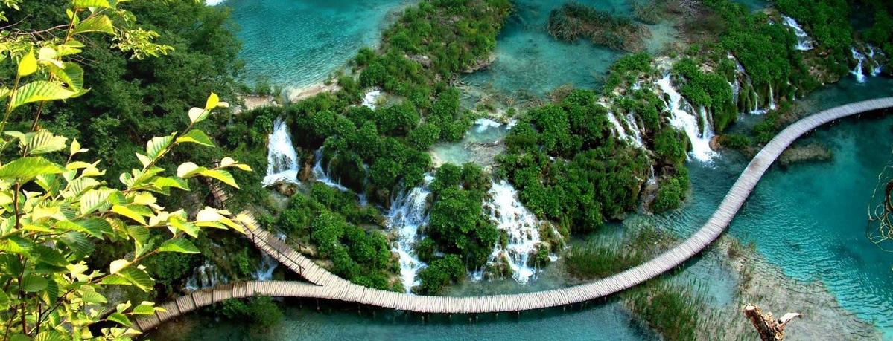

Kako do Plitvica?
Nacionalnom parku moguće je pristupiti državnim cestama: DC429 (Selište Drežničko – Prijeboj) iz smjera Zagreba/Zadra DC52 (Vrhovine – Korenica) iz smjera Otočca (A1) DC42 (Vrbovsko – Grabovac) iz smjera Ogulina (A1) Istočnim dijelom Parka prolazi cesta DC429 uz koju se nalaze dvije glavne ulazne recepcije u zonu posjećivanja jezera Nacionalnog parka, Ulaz 1 i Ulaz 2. Na oba ulaza osiguran je parking za posjetitelje (s naplatom), a u neposrednoj blizini ulaza nalaze se i autobusna stajališta.
Cestom DC429 prometuju autobusne linije koje povezuju ponajprije unutrašnjost Hrvatske i obalu. Savjetujemo da aktualan raspored linija potražite u info uredima Parka ili na web stranici Autobusnog kolodvora Zagreb (www.akz.hr). Obzirom da su glavni ulazi Parka međusobno udaljeni oko 3 km, preporučujemo da unaprijed isplanirate svoj posjet zbog mogućnosti odabira između različitih programa obilaska. Radi boljeg snalaženja i kretanja na području Nacionalnog parka, preporučujemo našu turističku kartu koju možete kupiti u našim info uredima (Ulaz 1, Ulaz 2, pomoćni ulaz Flora, stanica vlakova 3) i suvenirnicama.
Aktivnosti u parku
NP Plitvička jezera područje je iznimne bioraznolikosti i georaznolikosti koje godišnje posjeti preko milijun posjetitelja, stoga molimo, ne ostavljajte tragove kako bi ovo zaštićeno područje ostalo očuvano i za buduće generacije, krećite se označenim stazama i poštujte pravila ponašanja unutar Parka. Želite li posjetiti jezersku zonu, na raspolaganju vam je 8 kružnih programa obilaska, a ukoliko više preferirate pješačenje u mirnijem okruženju i želite svoj boravak obogatiti znanjem o šumskim ekosustavima, možete odabrati neku od 4 planinarske staze. U info uredima Parka potražite brošuru o planinarskim stazama kao i našu turističku kartu.
 Pješačke staze u Parku relativno su uske i prolaze ponajviše neravnim terenom i drvenim mostićima duž obala jezera, stoga zbog sigurnosti posjetitelja i posebnosti područja nije dozvoljeno udaljavanje s označenih pješačkih staza. Obzirom na karakteristike terena, preporučeno je imati odgovarajuću odjeću i obuću, kao i zaštitu od kiše i/ili sunca.